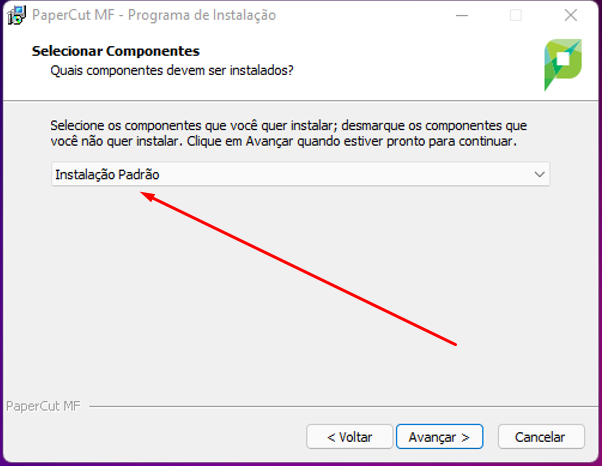
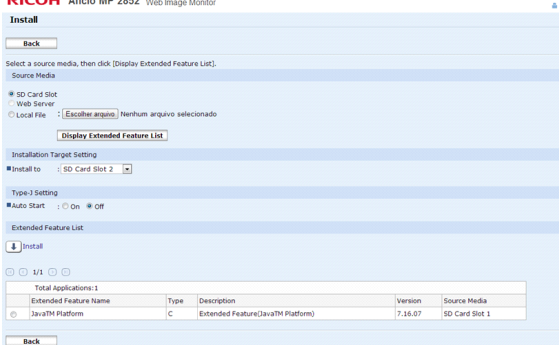

1º Tenha no equipamento por meio da nossa Aba Arquivos do Teams todo instalador do programa, e o execute na máquina/servidor que o cliente irá nos fornecer acesso.
2º Após executar o .exe, clique em Não.
3º Aceite os termos de uso.
4º Avance algumas opções até chegar nesta opção, na qual você vai escolher por padrão instalação padrão.

5º Avance as demais etapas até concluir a instalação, após isso irá abrir uma aba no navegador. Senha padrão: 4817.dig
6º Na próxima tela, inserimos a segunda opção: Pequena/Média empresa
7º O centro de custo normalmente é definido pelo cliente, mas na maioria dos casos deixamos como está e avançamos.
8º Nesta parte você seleciona da onde vai puxar os usuários , você pode selecionar todos ou apenas alguns grupos.
Após isso, o serviço será iniciado e o Paper já estará instalado.
1º Acessar o Browser da impressora no navegador, fazer o login Admin no equipamento.
2º Logo depois clicamos em Manutenção/Aplicação e Adicionar.
3º Selecione o Embarcado Samsung.par que está disponível em nosso grupo na aba Arquivos, e de OK
4º Após a instalação, atualize a página para habilitar a opção do Paper, aparecendo o menu superior XOA.
5º Colocar as informações desejadas
6º Se você está reinstalando o embarcado, lembre-se que a informação "device name" tem que ser exata do embarcado anteriormente instalado, para o Papercut reconhecer automaticamente e não ocorrer falhas e erros de comunicação.
7º Clique em Apply para efetuar conexão com o servidor.
1.A primeira coisa a fazer é acessar o Modo SPdo equipamento;
2.Acesse os Seguintes SP's:
- SP 5-113 02: External Optional Counter Type; Padrão de Fabrica "None", Você deve selecionar o "Device" que está alocado o JAVA;
- SP 5-985 02: Device Setting - Onboard USB; Desabilitar esses SP, de "1" para "0";
3.Acessar os Seguintes SP's:
- SP 5-844 100: Notify Unsupport; Padrão de Fábrica "1-Displayed" - nessas condições, ao conectar o leitor, ficará aparecendo uma mensagem de erro. Por este motivo, temos que mudar para "0-Not Displayed";
4.Após configurar o último SP, desligue e ligue o equipamento;
5.Acesse o modo Users Tools (Ferramenta de usuário);
6.Definições de Sistemas / Ferramentas do Administrador / Gestão de Aut. do Utilizador - essa função deve ficar "Desligada". Caso não haja usúario cadastrado, possivelmente essa função estará desligada
7.Após verificar o passo 6, acesse Definições de Sistemas / Ferramenta do Administrador / Gestão do Contador Avançado - essa função deve ficar "desligada".
8.Acesse o Webimage (IP do equipamento);
9.Digite no campo login "admin" e no campo senha, deixe em branco;
10.Clique em Configuration;
11.Em "Extended Feature Settings", clique em Extended Feature Info para verificar qual a versão do JAVA e em qual slot está o JAVA. Essa informação é importantíssima para apontar o "embarcado" para o mesmo slot;
12.Ainda em "Extended Feature Settings", clique em Administrador Tools:Heap/Stack Size Setting. Mude Heap Size para o máximo e Stack Size para o máximo
13.Clique em Extended Feature Setting / Install (embarcado.zip);
14.Clique em Display Extended Feature List

15.No campo "install To" aponte o slot do Java; 11 - Clique em "on", no campo "Auto Start"; - Selecione a aplicação "Java" e clique em install para o embarcado rodar com o Java.
16.Volte no equipamento e acesse o "User Tools"
17.Clique em Definições de Sistemas / Ferramentas do Administrador / Prioridade de Função (Para o equipamento sempre subir pelo JAVA)
18.Depois clique em Definições de sistemas / Ferramentas do Administrador / Gestão da Unidade de Carregamento Externo Avançada (Selecione quais recursos serão bloqueados.)
19.Desligue e ligue o equipamento novamente e informe ao cliente que o equipamento está com o Embarcado.
1º Para fazer Backup previsamos acessar o papercut e ir em opções > Backups e clicar em "Exportar agora".
2º Ira abrir uma janela informando como esta o processo do Backup.
3º Podemos encontrar o Backup em C:\Program Files\PaperCut MF\server\data\backups.
Exportar Fila
1º Vamos acessar o server de impressão e abrir o "Print Management" ou "Gerenciamento de Impressão".
2º Vamos clicar no Hostname do servidor com o botão direito do mouse e vamos selecionar "Export printers to a file".
3º Vamos escolher um lugar para salvar o arquivo
4º Vai finalizar e salvar onde foi selecionado.
Importar Fila
1º Vamos acessar o server de impressão e abrir o "Print Management" ou "Gerenciamento de Impressão".
2º Vamos clicar no Hostname do servidor com o botão direito do mouse e vamos selecionar "Import printers from a file".
3º Vamos selecionar o .printerExport
4º Em "Import mode" vamos colocar "Overwrite existing printers" e em "List in the directory" colocamos "List all printers"
5º Finalizado importação.
Importar Database
1º Vamos acessar o server de impressão e abrir CMD como Administrador.
2º Vamos navegar até a pasta do papercut com o segunte comando "cd c:\Program Files\PaperCut MF\server\bin\win".
3º Vamos para os serviços do papercut com o comando "stop-server.bat"
4º Vamos usar o comando "db-tools.exe import-db "c:\diretorio do Backup.zip" -f
5º Podemos dar "Y" e vai começar a apagar o banco antigo e importar o novo.
6º Após terminar vamos chegar nesta tela só iniciar os serviços do Papercut.
Update 17 para 19
1º Para fazer o update é só instalar o Papercut 19 por cima da instação do PaperCut 17 ele vai subistuir alguns arquivos e só sera necessario fazer a ativação.